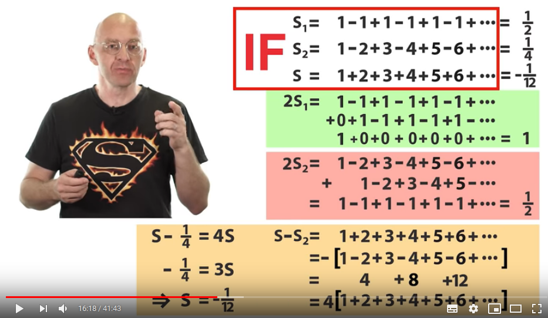
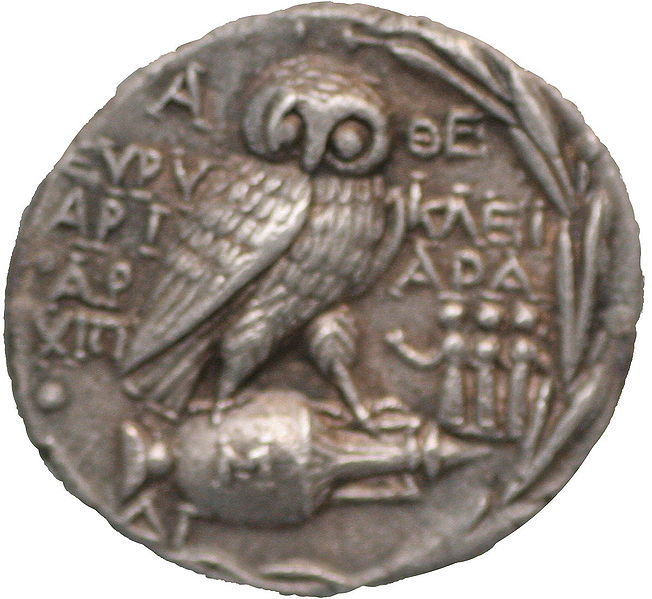
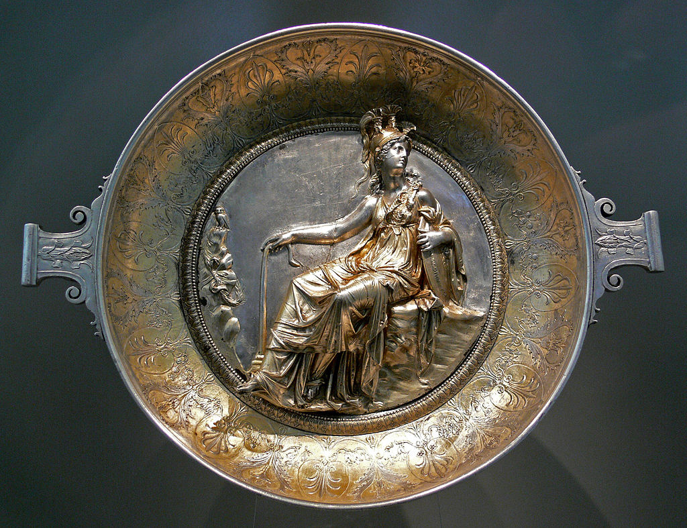
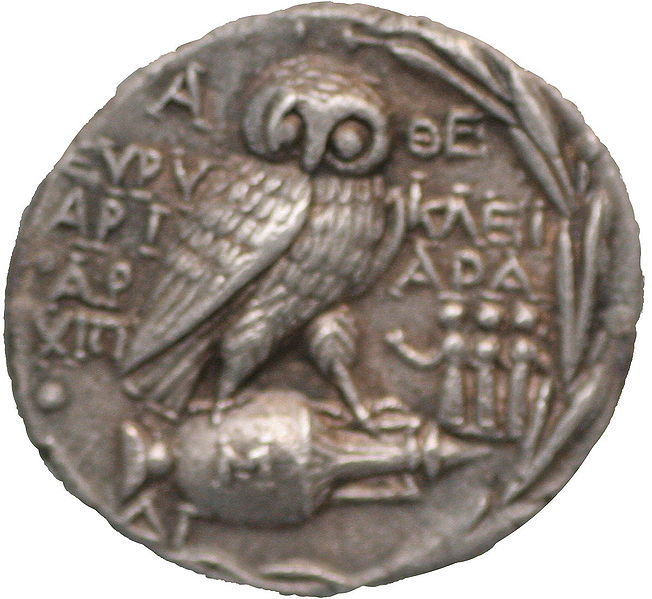
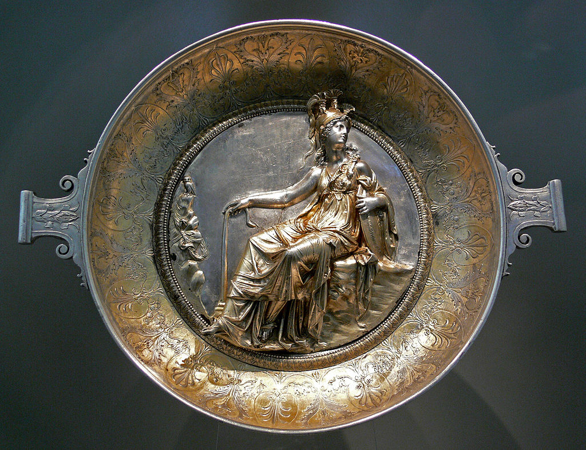

literally when Supermensch was the last word I wrote, my parallel interest have shown me this guy, all of the sudden wearing such a t-shirt:

and it would be nothing, just a coincidence if I didn't see something exactly like this just a day before:
after I wrote "if they write чево as чего only to entangle that subject" I went on:
and
after I updated the site with that, I stumbled across
g could be cj but it reads as d when read in russian cursive (cursive again, I didn't research it enough)
and thus c is a form of d? it makes sense for they both contain the grapheme of c, but Aegina standing for Ἀθηνᾶ which was also written as.. ATANA?
I read it at some linguistic conference, never cared to check if it's true, but looking for atana Ἀθηνᾶ here's the image I found the first. Г again, I'll keep it here until I can read greek, don't forget I write this book mostly for myself. but right now, is it really me who's writing it for myself?
ATENA is the the way to write her name, not ATANA,
it's just my satanic tendencies envoke me to praise Satan. and Satanaya my colleague keeps on telling me about.
And I don't even know if this poster relates to anything, for ΑΓΩΝ stands for STRUGGLE, and isn't Athena a goddess of war? I also thought it was wisdom. Wisdom, handicraft & warfare.
αγωνα is match (or struggle too if I translate with google in rus)
so I cut this piece out, but today that Superman made me bring this back together. Also because while I was looking for all this I found some interesting coins of Athena:


but of course handicraft can do better:

Look at how it's written at the coin above, A θE as if it's two
words, Aegina (/iˈdʒaɪnə/; Ancient
Greek: Αἴγινα) was a figure of
Greek mythology, the nymph
of the island that bears her name, Aegina,
lying in the Saronic Gulf between Attica
and the Peloponnesos.
The archaic Temple of Aphaea, the
"Invisible Goddess", on the island was later subsumed by the
cult of Athena. Aphaia (Ἀφαῖα) may be
read as an attribute of Aegina that provides an epithet,
or as a doublet of the goddess.
g could be cj but it reads as d when read in russian cursive (cursive again, I didn't research it enough)
and thus c is a form of d? it makes sense for they both contain the grapheme of c, but Aegina standing for Ἀθηνᾶ which was also written as.. ATANA?
I read it at some linguistic conference, never cared to check if it's true, but looking for atana Ἀθηνᾶ here's the image I found the first. Г again, I'll keep it here until I can read greek, don't forget I write this book mostly for myself. but right now, is it really me who's writing it for myself?
ATENA is the the way to write her name, not ATANA,
it's just my satanic tendencies envoke me to praise Satan. and Satanaya my colleague keeps on telling me about.
And I don't even know if this poster relates to anything, for ΑΓΩΝ stands for STRUGGLE, and isn't Athena a goddess of war? I also thought it was wisdom. Wisdom, handicraft & warfare.
αγωνα is match (or struggle too if I translate with google in rus)
so I cut this piece out, but today that Superman made me bring this back together. Also because while I was looking for all this I found some interesting coins of Athena:

but of course handicraft can do better:

as if it's θe as if it is general for fairy (fairy is фея in russian, θεά is goddess in greek)
once again I stress that θ & φ are invariants.
P.S. I was watching that mathematical video because I thought I found where they've broken math, knowing of all those other scientific fields fulled with cognitive dissonances of some broken logical conclusions, I expected to see something of math deeper than x^0 = 1 and 0! = 1
so here's how I would go descending that rabbit hole:
https://www.youtube.com/watch?v=PCu_BNNI5x4
https://www.youtube.com/watch?v=w-I6XTVZXww
and here that guy telling where they're wrong, though I didn't get where, other than they're wrong:
https://www.youtube.com/watch?v=YuIIjLr6vUA

though his previous video on this topic seems to be more informative:
https://www.youtube.com/watch?v=jcKRGpMiVTw
I dare to say that mistake is earlier than they diverge,
1-1+1-1+1-1+... isn't 1/2 as this image is mere trolling:
but who am I to say their math is wrong,
they're mathematicians, and I deal linguistics, which is humanity,
and everybody knows that humanitarian mind is lack of math mind.
If math refers digits, what is the name for what I'm doing? path?
Researching not digits, but letters.
path ~ лаз?
p = п ~ л
p = r ~ л
нет, это разные автобусы (паз и лиаз) не все эту шутку отцентят
So I just leave it here, mostly for myself to make sense of that mathematical madness or to whistleblow the nonsense. but later.
But allow me to leave my brave guess here of why those paradoxes take place:
People avoid dividing by zero, but they're so easily manipulating with infinite series, which pretty much the same concept of dividing by zero.
So when you just shift the serie by one position, isn't it like making elements of each position larger or smaller depending on where that serie go. Should I use "series" instead of "serie"? I apologize.
1-1+1-1+1-1+... isn't 1/2 as this image is mere trolling:
it's whether 0 (when seen as (1-1)+(1-1)+(1-1)+...
or it can be 1 (when seen as 1+(-1+1)+(-1+1)+(-1+...
so they took the average number that sum never has. they cannot imagine infinity, I heard humans have this trouble. So they made some third calculation, and got 1/2 so they had two reasons to take this weird answer as solution to the approximation.
And after this tolerance all the system began to shatter, and it probably caused Gödel's Incompleteness Theorem, though I still didn't understand it, the video explaining it is currently on the pause.
So after such a deviant allowance of calculating the sum of a somewhat divirgent row, they came to that paradox, that 1+2+3+4+5... -> -1/12 and if string theory is based upon this, no wonder it hasn't been confirmed by a single experiment.
The End of the secret level.